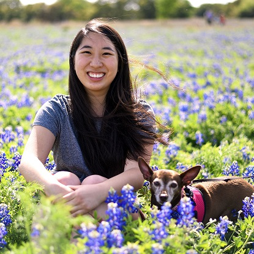
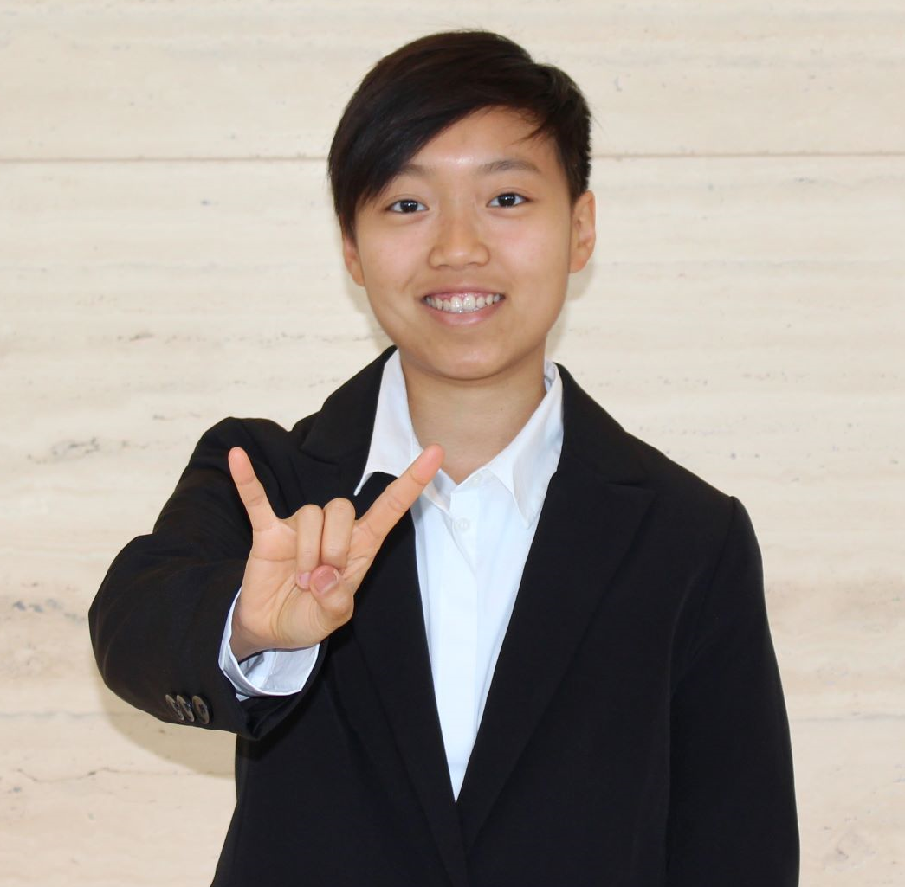

Founders
Rosaline Chen
Rosaline graduated in December 2019 from UT Austin with a BS in Biomedical Engineering and a Bridging Disciplines Program Certificate in Environment and Sustainability. Her aspirations are to better society by supporting social equity and minimizing environmental impact. She interned for Thermo Fisher Scientific as a supply chain intern for their biological products. She currently works full-time at BlueCross BlueShield of TX as an Assistant Analytics Consultant, leveraging data to drive better health outcomes.
Paige Livingston Lopez
Paige graduated in Fall 2020 from UT Austin with a BSA in Biochemistry and a BA in Plan II Honors. She has found herself in the world of data as power and knowledge through both her senior thesis on health outcomes and her work with Team Throw-a-Weigh. Paige believes that sustainability, especially in relation to food, is essential to public health. She works part time at Texas Free Market Surgery as the co-leader of their Outcome Measurement team.
Becky Xu
Becky is a full-time student at UT Austin, majoring in Computer Science and minoring in Business Foundations, with an expected graduation date in Spring 2020. She wants to make an impact on the world that incorporates both her love for food and technology. Becky is fundamentally motivated by her strong belief in the communication, structure, and commitment of our team, along with her core value “waste not want not.”